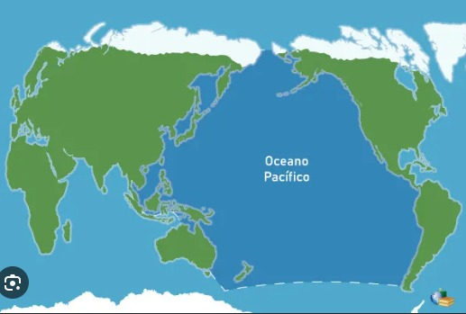
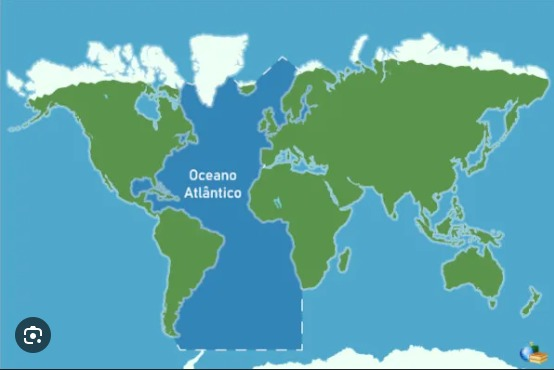
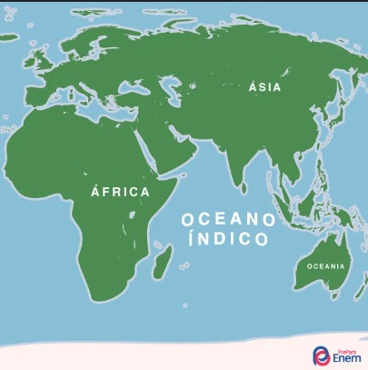
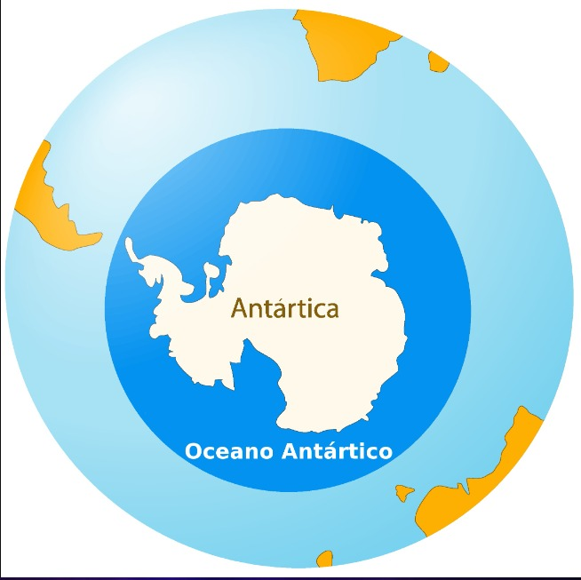
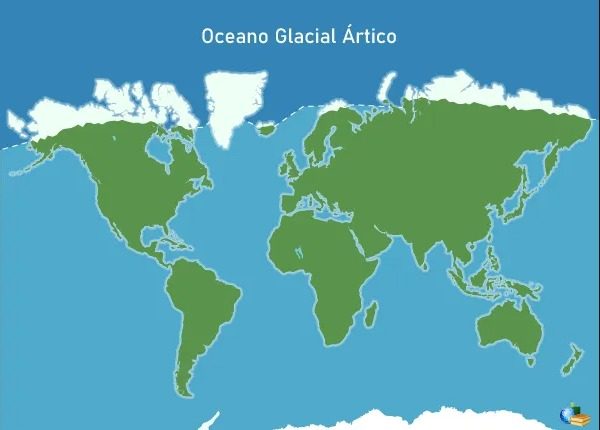

Os oceanos podem ser definidos como imensos corpos de água salgada que ocupam as depressões da superfície da crosta terrestre em nosso planeta. Eles constituem mais de 97% de toda a água que existe no globo, sendo essenciais para o equilíbrio entre a vida na terra e a vida marinha.
Nos oceanos estão as grandes correntes marítimas, que auxiliam na formação de precipitação devido à evaporação das águas em todo o mundo, além de contribuírem para as dinâmicas climáticas nos diferentes lugares da Terra, o que pode ser assustador, como a formação de tufões e furacões.
Para tornar mais fácil a compreensão sobre os oceanos, a ciência dividiu-os em cinco, levando em consideração sua localização geográfica, e variação climática e de latitude.
É o maior dos oceanos, com uma aproximada extensão de 146,5 milhões de km². Devido ao seu tamanho, apresenta diferentes condições climáticas e variadas temperaturas. Atinge o oeste da América, o sul da Antártida, a Oceania e o leste asiático.
Considerado o segundo maior oceano, é um divisor natural entre os continentes americano, europeu e africano. Devido à Linha do Equador, é chamado de Atlântico Norte (Hemisfério Norte) e Atlântico Sul (Hemisfério Sul).
No ranking de extensão territorial, é o terceiro maior, banhando o leste do continente africano, o sul da Ásia, o oeste da Oceania, e parte da Antártida.
É localizado no extremo sul do planeta, também conhecido como Oceano Austral. Ele é a junção das águas dos três maiores oceanos do mundo (Pacífico, Atlântico e Índico), que chega até a Antártida.
Localiza-se lo Polo Norte do planeta, sendo formado por águas congeladas e/ou águas com baixas temperaturas devido ao ângulo de inclinação da Terra e à baixa insolação nessa região.
